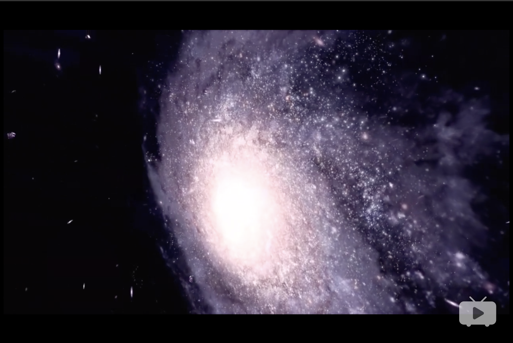
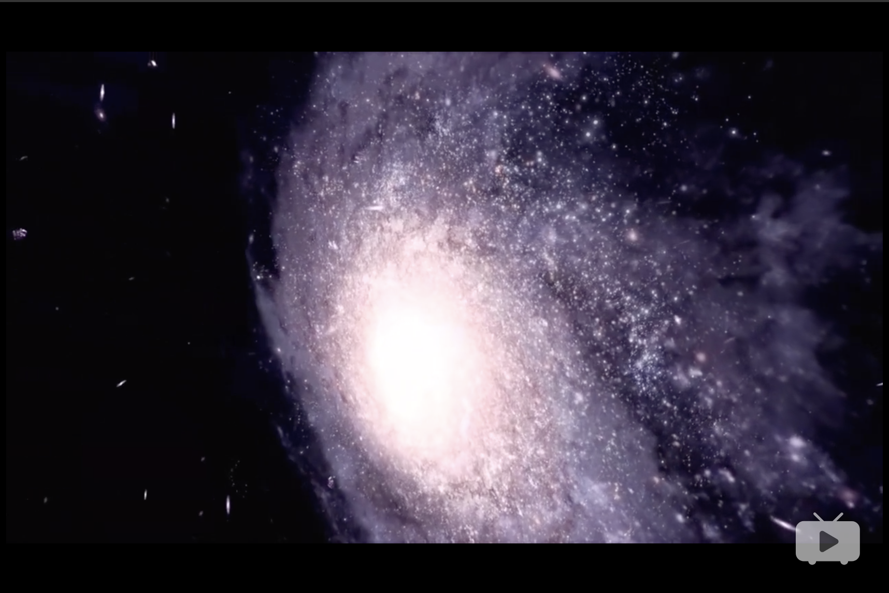

Recently, I am into something about our universe.
I even tried to read 「A Brief History Of Time」.
Hmmmm. Definitly it is far beyond my understanding. So I decided to start from some friendly space documentary films.
It seems good for me！
And 「JOURNEY TO THE EDGE OF THE UNIVERSE」is the one I want to recommend today. It shows us splendid images of the universe.
Taking us to the big endless universe and explore the science and history behind the distant celestial bodies in the solar system in two hours.
Yup！This is THE BEST space documentary I have ever seen in my life!！

They say that it’s so big we can’t really measure it.
The part we can see has a radius of 47 billion light years.
And I think about how in this universe, there are supposedly at least 100 million galaxies.
I can’t help but think to myself, “Wow. We live in just one of those galaxies.”
 
There are so many amazing(or you can call them scary) powerful monsters in the universe. Some stronger monsters haven't been known by us now.

There are so many amazing(or you can call them scary) powerful monsters in the universe. Some stronger monsters haven't been known by us now.
I really start thinking about name my cat 「Quasar」which seems more powerful than 「black hole」.
「Singularity」is also a good choice since it is so mistry and meaning of a new start.
Even tho I dont own a cat now but I am serious to pick a special name for my kitty XD.
This is the Quasar？
↓

After watching this documentary film you will feel humanbeing are so small and we are all the stuff of starts.
Another good thing is that I realized there is no need to take some little trouble things which bug our life sometimes too seriously.
Life is too short, so do whatever you like and enjoy the process of it.
Snatching the eternal out of the desperately fleeting is the great magic trick of human existence.